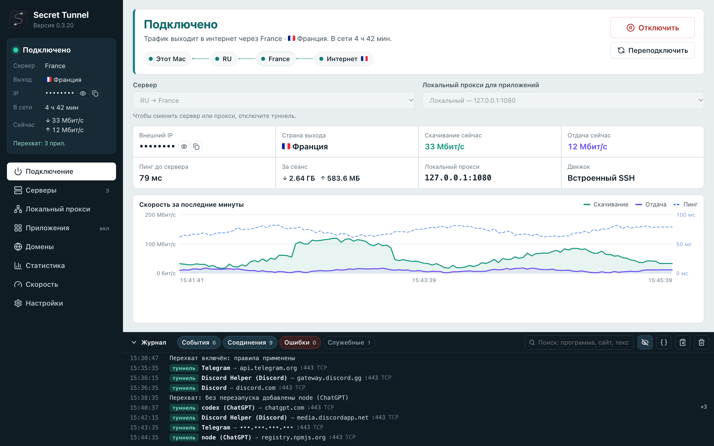

Нужные программы — через свой сервер
Secret Tunnel ведёт трафик выбранных приложений через ваш SSH-сервер, если нужно — цепочкой через промежуточный. Браузер, банк и всё остальное продолжают работать напрямую.
macOS, Windows и Android. Нужен свой сервер с SSH: подойдёт любой недорогой VPS на Linux.
Что умеет
Ваш SSH-сервер, ваш ключ, ваш выбор программ. Никаких сторонних VPN-сервисов и подписок.
- Туннель только для выбранных программ
- Отметьте Telegram, Discord или ChatGPT галочкой. Их вспомогательные процессы подхватываются сами, остальная система не замечает туннеля.
- Цепочка серверов
- Соединение идёт через промежуточный сервер, а в интернет выходит с дальнего. Удобно, когда до зарубежного сервера напрямую плохой путь.
- Звонки и игры тоже работают
- Небольшой агент на сервере передаёт и TCP, и UDP внутри одного SSH-соединения. Отдельные порты на сервере открывать не нужно.
- Вход по ключу, сервер проверяется
- Подключение только по SSH-ключу. Отпечаток сервера сверяется при каждом входе, подменённый сервер не пройдёт.
- Статистика по приложениям
- Сколько длились сеансы, через какой маршрут и страну, какие программы сколько трафика прогнали.
- Проверка скорости
- Тесты через туннель и без него на Cloudflare, LibreSpeed и M-Lab: потоки, пинг под нагрузкой, UDP, короткие запросы. История замеров со схемой маршрута.
- Понятный журнал
- Какая программа куда подключилась и каким путём: через туннель, напрямую или заблокировано. IP-адреса скрываются одной кнопкой.
- Уживается с другими VPN
- На macOS SSH к серверу идёт мимо Clash и подобных, чтобы туннель не оказался внутри чужого VPN.
Как это выглядит
Настоящие экраны приложения на демонстрационных данных.

Первые шаги
От аренды сервера до первой программы через туннель. Подробности каждого шага — в базе знаний.
Сервер
Арендуйте VPS на Linux в нужной стране. Достаточно самого простого тарифа.
Как выбратьКлюч
Создайте SSH-ключ и добавьте его публичную часть на сервер.
КомандыАгент
Установите агент на сервер, чтобы через туннель шли UDP, звонки и игры.
УстановкаПодключение
Добавьте сервер в приложение и нажмите «Подключить».
ПошаговоПрограммы
Отметьте нужные приложения и включите перехват.
Выбор программ
Что понадобится
| macOS | macOS 15 или новее. Для выбора программ — ProxyBridge 4.1.2 из официального релиза и разрешение системного расширения. |
|---|---|
| Windows | Windows 10 или 11. Установщик уже содержит компонент перехвата; для выбора программ приложение запускается от имени администратора. |
| Android | Android 8.0 или новее. Работает как VPN только для отмеченных приложений. |
| Сервер | Linux x86_64 с доступом по SSH-ключу. Агент ставится в домашний каталог пользователя, без sudo и без открытия портов. |